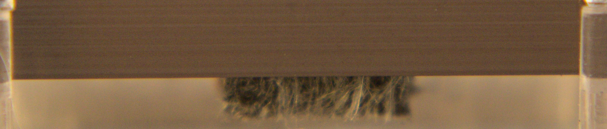

Casettes: All tapes are self destructing tapes
"Trabajo arqueológico de intervención y performance con cintas y cassettes rescatados, en el que modifico tanto las cintas como los reproductores, explorando la condición material de las grabaciones. Esta idea partió originalmente de grabaciones de mi archivo familiar y luego se amplió a cintas encontradas en compraventas. Los cassettes con música y grabaciones caseras estuvieron presentes a lo largo de toda mi infancia y adolescencia. Hace algunos años, cuando intenté escuchar nuevamente grabaciones de mi infancia, descubrí que el tiempo y el uso habian destruido casi completamente el sonido. Solo quedaba un siseo caracteristico y algunos ruidos fantasmales. Una vez leí que cada vez que recordamos algo, lo modificamos. Esta es la razón por la que los recuerdos se deforman, aparecen y desaparecen detalles de lo que vivimos. Se borra la linea entre memoria y ficción. De la misma manera el funcionamiento de la cinta magnetica establece una relación paradójica entre presencia y ausencia: Cada pasada del micrófono magnetico, recupera un pasado sonoro, pero deteriora ligeramente la cinta. Visto así, el acto de escucha, es un acto de agresión contra lo que se escucha, en el que las sucesivas reproducciones distorsionan el sonido que escuchamos.